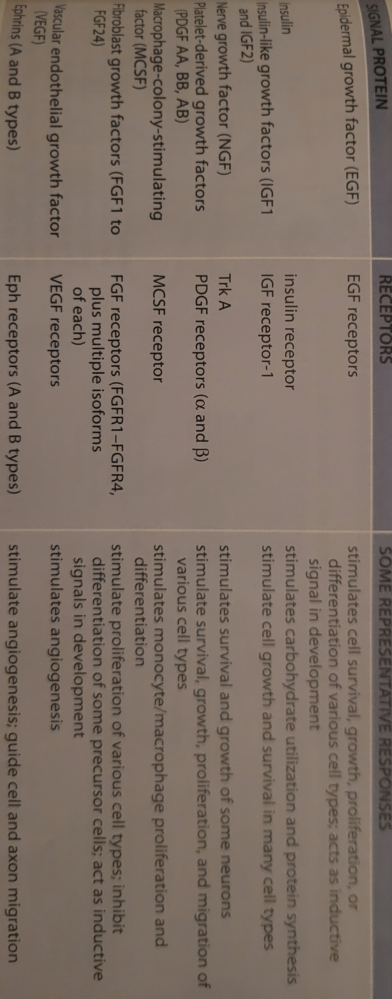

Lesson 12: Signaling through Receptor Tyrosine Kinases
Signaling through Receptor Tyrosine Kinases
Enzyme-coupled receptors are transmembrane proteins with their ligand binding domains on the outer surface of the plasma membrane. Their cytosolic domain has either intrinsic enzyme activity or direct enzyme association. Enzyme-coupled receptors usually only have one subunit.
Enzyme-coupled receptors share many of the same signalling pathways with GPCRs.
Activated Receptor Tyrosine Kinases…

Ephrins are the largest class of membrane-bound ligands. They help guide the migration of cells and axons along specfic pathways during animal development.
In all Receptor Tyrosine Kinase (RTK) pathways, the biding of the signal protein to the ligand binding domain on the outside of the cell enables the intracellular tyrosine kinase domain to phosphorylate selected tyrosine side chains both on the receptor protein and on the intracellular signaling proteins.
Phosphorylated Tyrosines on RTKs Serve…
Tyrosine phosphorylation on RTK cytoplasmic tails causes, first, increases the kinase activity of the enzyme and, second, it creates high-affinity docking sites for the binding of specific intracellular signaling proteins.
Each of the signaling proteins binds to specific phosphorylated sites because it contains a specific phosphotyrosine binding domain.
An intracellular signaling complex is formed when a comformational change in the signaling protein or when the protein is brought near the protein that is next in the pathway.
Proteins with SH2 Domains Bind…
Ras belongs to a large family…
Ras - monomeric G-protein that mediates cell proliferation.